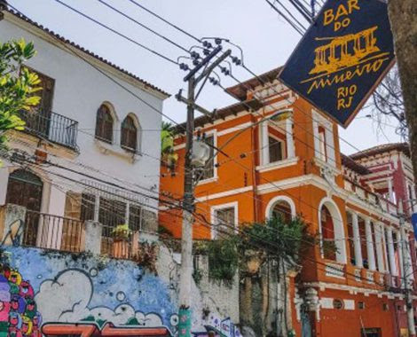
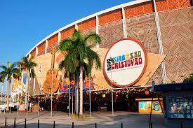
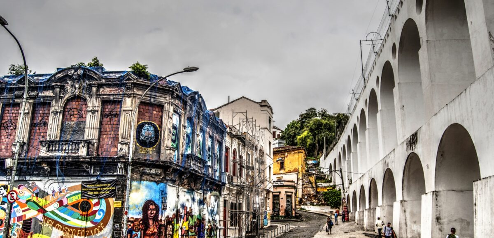

Top 5 por Cariocas
Dicas de quem vive o Rio: lugares autênticos escolhidos por moradores, do boteco raiz ao pôr do sol inesquecível.

Bar do Mineiro
Um famoso boteco em Santa Teresa, conhecido por sua comida caseira e ambiente acolhedor.
Mirante do Leblon
Um dos melhores pontos para assistir ao pôr do sol, com uma vista deslumbrante da praia e da cidade.

Feira de São Cristóvão
Um mercado vibrante que celebra a cultura nordestina, com comidas típicas e música ao vivo.

Praia do Leme
Uma praia menos conhecida, ideal para quem busca tranquilidade e beleza natural.

Lapa
Famosa por sua vida noturna, com muitos bares e música ao vivo.